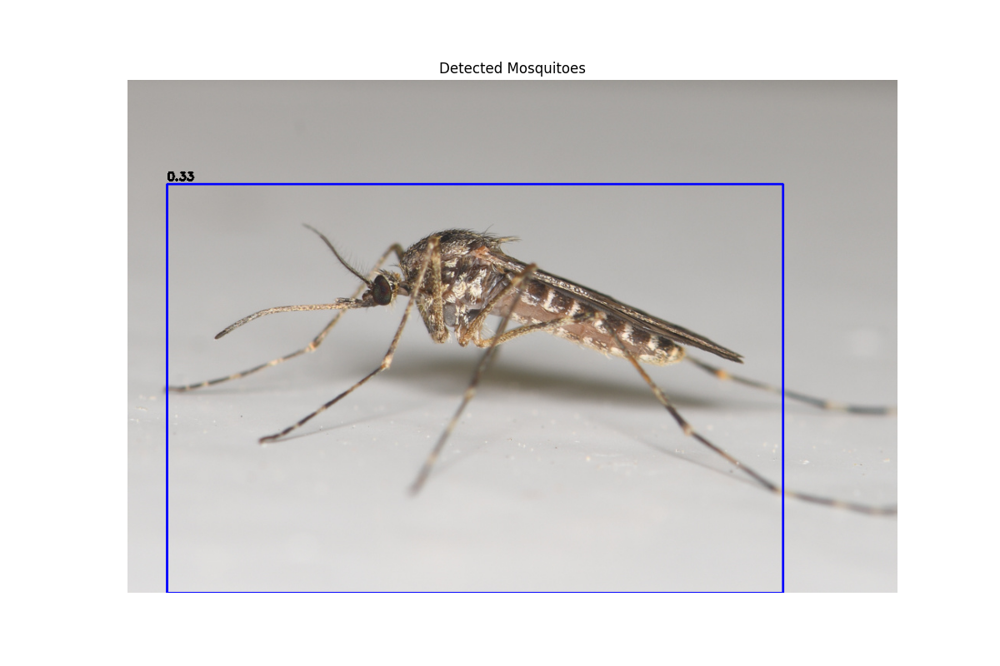
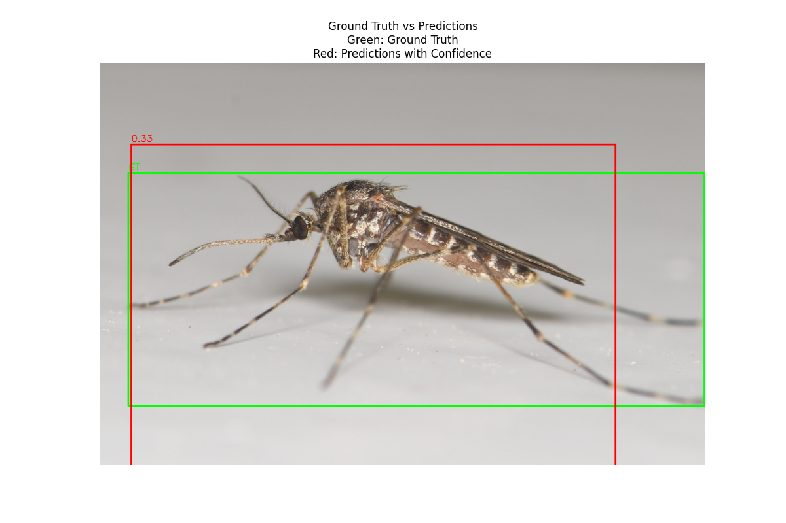

Note
Click here to download the full example code
Mosquito Detection Tutorial
This tutorial shows how to use the MosquitoDetector from the CulicidaeLab
library to perform object detection on images. We will cover:
- Loading the detector model
- Preparing an image from the dataset
- Running the model to get bounding boxes
- Visualizing the results
- Evaluating prediction accuracy
- Running predictions on a batch of images
Install the culicidaelab library if not already installed
!pip install -q culicidaelab[full-gpu]
`
<!-- GENERATED FROM PYTHON SOURCE LINES 44-49 -->
## 1. Initialization
First, we'll get the global `settings` instance and use it to initialize our `MosquitoDetector`.
By setting `load_model=True`, we tell the detector to load the model weights into memory immediately.
If the model file doesn't exist locally, it will be downloaded automatically.
<!-- GENERATED FROM PYTHON SOURCE LINES 51-73 -->
```{.python }
from PIL import Image, ImageDraw, ImageFont
import numpy as np
import matplotlib.pyplot as plt
from culicidaelab import get_settings
from culicidaelab import MosquitoDetector, DatasetsManager
# Get settings instance
settings = get_settings()
# Initialize the datasets manager
manager = DatasetsManager(settings)
# Load detection dataset
detect_data = manager.load_dataset("detection", split="train[:20]")
# Instantiate the detector and load the model
print("Initializing MosquitoDetector and loading model...")
detector = MosquitoDetector(settings=settings, load_model=True)
print("Model loaded successfully.")
Out:
Cache hit for split config: train[:20] C:\Users\lenova\AppData\Local\culicidaelab\culicidaelab\datasets\mosquito_detection\9e9940e1c673b6f0
Initializing MosquitoDetector and loading model...
Model loaded successfully.
2. Detecting Mosquitoes in a Dataset Image
Now let's use an image from the detection dataset and run the detector on it.
Inspect a detection sample
detect_sample = detect_data[5]
detect_image = detect_sample["image"]
# Get ground truth objects
objects = detect_sample["objects"]
print(f"Found {len(objects['bboxes'])} object(s) in this image.")
# The `predict` method returns a list of detections.
# Each detection is a tuple: (x1, y1, x2, y2, confidence_score)
result = detector.predict(detect_image)
# The `visualize` method draws the bounding boxes onto the image for easy inspection.
annotated_image = detector.visualize(detect_image, result)
# Display the result
plt.figure(figsize=(12, 8))
plt.imshow(annotated_image)
plt.axis("off")
plt.title("Detected Mosquitoes")
plt.show()
# Print the numerical detection results
print("\nDetection Results:")
if result:
for i, det in enumerate(result.detections):
print(
f" - Mosquito {i+1}: \
Confidence = {det.confidence:.2f}, \
Box = (x1={det.box.x1:.1f}, y1={det.box.y1:.1f}, x2={det.box.x2:.1f}, y2={det.box.y2:.1f})",
)
else:
print(" No mosquitoes detected.")

Out:
Found 1 object(s) in this image.
C:/Users/lenova/CascadeProjects/culicidaelab/docs/en/examples/tutorial_part_2_mosquito_detection.py:99: UserWarning: FigureCanvasAgg is non-interactive, and thus cannot be shown
plt.show()
Detection Results:
- Mosquito 1: Confidence = 0.44, Box = (x1=73.8, y1=141.9, x2=820.1, y2=511.1)
3. Evaluating a Prediction with Ground Truth
The evaluate method allows you to compare a prediction against a ground truth.
This is useful for measuring the model's accuracy. The method returns several metrics,
which are a standard for object detection.
Now let's evaluate the prediction against the actual ground truth from the dataset.
Extract ground truth boxes from the dataset sample
ground_truth_boxes = []
for bbox in objects["bboxes"]:
x_min, y_min, x_max, y_max = bbox
ground_truth_boxes.append((x_min, y_min, x_max, y_max))
# Evaluate using the ground truth from the dataset
print("--- Evaluating with dataset ground truth ---")
evaluation = detector.evaluate(ground_truth=ground_truth_boxes, prediction=result)
print(evaluation)
Out:
--- Evaluating with dataset ground truth ---
{'precision': 0.9999999989999999, 'recall': 1.0, 'f1': 0.9999999989999999, 'ap': 0.9999999989999999, 'mean_iou': 0.6156440556082946}
You can let the method run prediction internally by passing the raw image
print("\n--- Evaluating directly from an image ---")
evaluation_from_raw = detector.evaluate(ground_truth=ground_truth_boxes, input_data=detect_image)
print(evaluation_from_raw)
Out:
--- Evaluating directly from an image ---
{'precision': 0.9999999989999999, 'recall': 1.0, 'f1': 0.9999999989999999, 'ap': 0.9999999989999999, 'mean_iou': 0.6156440556082946}
4. Running Batch Predictions on Dataset Images
For efficiency, you can process multiple images at once using predict_batch.
Extract images from the detection dataset
image_batch = [sample["image"] for sample in detect_data]
# Run batch prediction
detections_batch = detector.predict_batch(image_batch)
print("Batch prediction complete.")
for i, dets in enumerate(detections_batch):
print(f" - Image {i+1}: Found {len(dets.detections)} detection(s).")
Out:
Batch prediction complete.
- Image 1: Found 1 detection(s).
- Image 2: Found 1 detection(s).
- Image 3: Found 1 detection(s).
- Image 4: Found 1 detection(s).
- Image 5: Found 1 detection(s).
- Image 6: Found 1 detection(s).
- Image 7: Found 1 detection(s).
- Image 8: Found 1 detection(s).
- Image 9: Found 1 detection(s).
- Image 10: Found 1 detection(s).
- Image 11: Found 1 detection(s).
- Image 12: Found 1 detection(s).
- Image 13: Found 1 detection(s).
- Image 14: Found 1 detection(s).
- Image 15: Found 1 detection(s).
- Image 16: Found 1 detection(s).
- Image 17: Found 1 detection(s).
- Image 18: Found 1 detection(s).
- Image 19: Found 1 detection(s).
- Image 20: Found 1 detection(s).
5. Evaluating a Batch of Predictions with Dataset Ground Truth
Similarly, evaluate_batch can be used to get aggregated metrics over the entire dataset.
Extract ground truth from the detection dataset
ground_truth_batch = []
for sample in detect_data:
boxes = []
for bbox in sample["objects"]["bboxes"]:
x_min, y_min, x_max, y_max = bbox
boxes.append((x_min, y_min, x_max, y_max))
ground_truth_batch.append(boxes)
# Call evaluate_batch with dataset ground truth
print("\n--- Evaluating the entire batch with dataset ground truth ---")
batch_evaluation = detector.evaluate_batch(
ground_truth_batch=ground_truth_batch,
predictions_batch=detections_batch,
num_workers=2, # Use multiple workers for faster processing
)
print("Aggregated batch evaluation metrics:")
print(batch_evaluation)
Out:
--- Evaluating the entire batch with dataset ground truth ---
Aggregated batch evaluation metrics:
{'precision_mean': 0.9999999989999999, 'precision_std': 0.0, 'ap_mean': 0.9999999989999999, 'ap_std': 0.0, 'recall_mean': 1.0, 'recall_std': 0.0, 'mean_iou_mean': 0.7802580509636634, 'mean_iou_std': 0.11935857019771838, 'f1_mean': 0.9999999989999999, 'f1_std': 0.0, 'count': 20}
6. Visualizing Ground Truth vs Predictions
Let's create a comparison visualization showing both ground truth and predictions.
Create a function to visualize both ground truth and predictions
def visualize_comparison(image_rgb, ground_truth_boxes, detections):
"""
Visualize ground truth and detection bounding boxes on an image using Pillow.
Args:
image_rgb: RGB image as numpy array or PIL Image
ground_truth_boxes: List of ground truth bounding boxes [x_min, y_min, x_max, y_max]
detections: List of detections results
Returns:
PIL Image with bounding boxes drawn
"""
# Convert numpy array to PIL Image if needed
if isinstance(image_rgb, np.ndarray):
if image_rgb.dtype == np.float32 or image_rgb.dtype == np.float64:
image_rgb = (image_rgb * 255).astype(np.uint8)
image = Image.fromarray(image_rgb)
else:
image = image_rgb.copy()
# Create a drawing context
draw = ImageDraw.Draw(image)
# Try to load a default font, fall back to default if not available
try:
font = ImageFont.truetype("arial.ttf", 16)
except OSError:
try:
font = ImageFont.load_default()
except Exception:
font = None
# Draw ground truth boxes in green
for bbox in ground_truth_boxes:
x_min, y_min, x_max, y_max = (int(v) for v in bbox)
# Draw rectangle
draw.rectangle(
[(x_min, y_min), (x_max, y_max)],
outline="green",
width=2,
)
# Draw label
text = "GT"
text_bbox = draw.textbbox((0, 0), text, font=font)
text_width = text_bbox[2] - text_bbox[0]
text_height = text_bbox[3] - text_bbox[1]
# Position text above the box
text_x = x_min
text_y = max(0, y_min - text_height - 2)
# Draw text background
draw.rectangle(
[(text_x, text_y), (text_x + text_width, text_y + text_height)],
fill="green",
)
# Draw text
draw.text((text_x, text_y), text, fill="white", font=font)
# Draw detection boxes in blue with confidence
for det in detections.detections:
x_min, y_min, x_max, y_max = int(det.box.x1), int(det.box.y1), int(det.box.x2), int(det.box.y2)
# Draw rectangle
draw.rectangle(
[(x_min, y_min), (x_max, y_max)],
outline="red",
width=2,
)
# Draw confidence label
text = f"{det.confidence:.2f}"
text_bbox = draw.textbbox((0, 0), text, font=font)
text_width = text_bbox[2] - text_bbox[0]
text_height = text_bbox[3] - text_bbox[1]
# Position text above the box
text_x = x_min
text_y = max(0, y_min - text_height - 2)
# Draw text background
draw.rectangle(
[(text_x, text_y), (text_x + text_width, text_y + text_height)],
fill="red",
)
# Draw text
draw.text((text_x, text_y), text, fill="white", font=font)
return image
# Create comparison visualization
comparison_image = visualize_comparison(np.array(detect_image), ground_truth_boxes, result)
# Display the comparison
plt.figure(figsize=(12, 8))
plt.imshow(comparison_image)
plt.axis("off")
plt.title("Ground Truth vs Predictions\nGreen: Ground Truth\nRed: Predictions with Confidence")
plt.show()

Out:
C:/Users/lenova/CascadeProjects/culicidaelab/docs/en/examples/tutorial_part_2_mosquito_detection.py:292: UserWarning: FigureCanvasAgg is non-interactive, and thus cannot be shown
plt.show()
Total running time of the script: ( 0 minutes 18.595 seconds)
Download Python source code: tutorial_part_2_mosquito_detection.py
Download Jupyter notebook: tutorial_part_2_mosquito_detection.ipynb